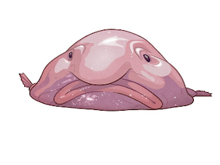

I used to be obsessed with Anne With an E so this is one of my favorite quotes from the show.
The best part of knowing the rules is finding acceptable ways of breaking them.
- Winifred Rose
| Personal Website Project |
|---|
|
The recipe page is the second page in my personal website project Mr.Jones :) |
Here are some of my past projects that Iv'e completed in Web Design.
Two different recipes made during thanksgiving!
Wordpress company website on sending people to Mars.
My Journal.
this homepage will display information about myself and what I'm working on. This blobfish is my spirit animal by the way. :)
